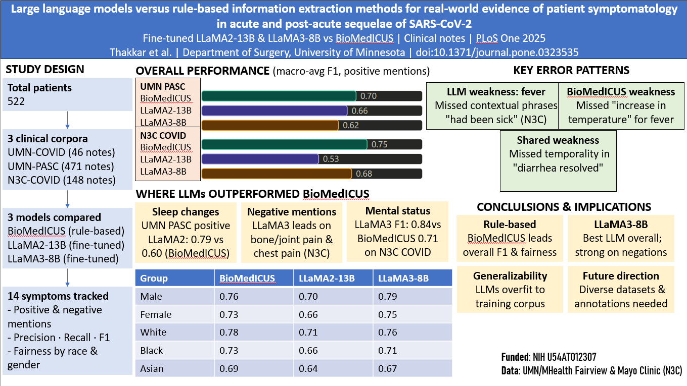
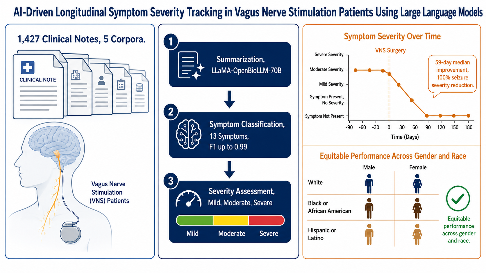
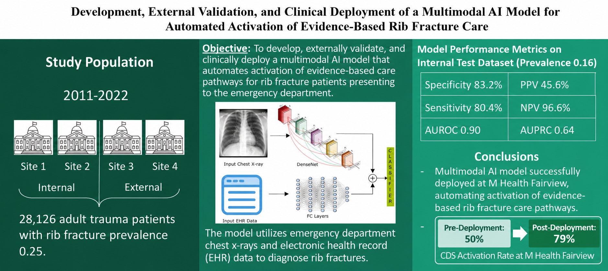
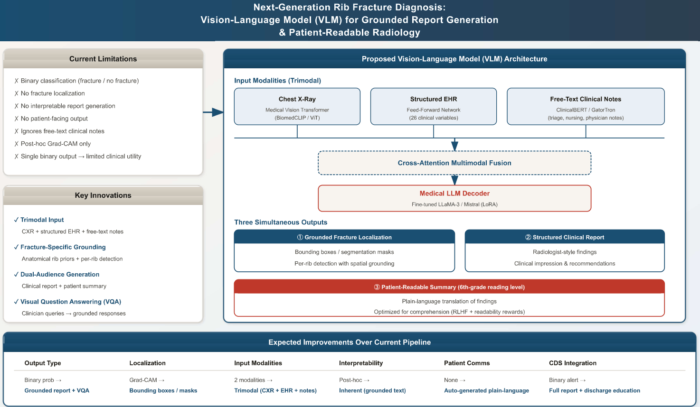
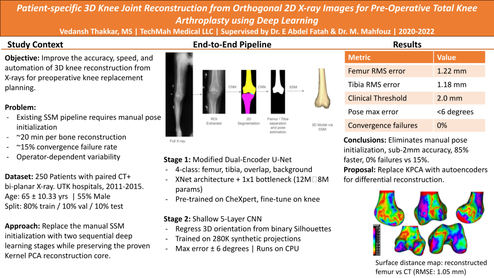
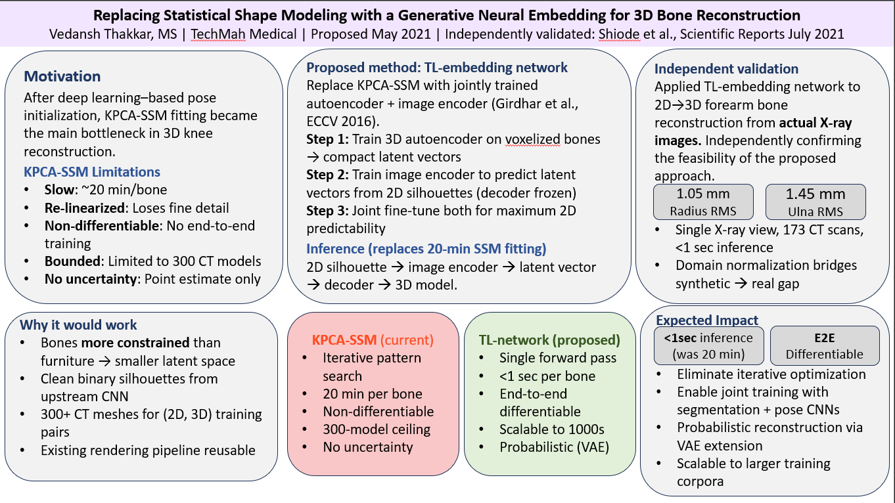

I am a clinical AI researcher and machine learning engineer with six years of experience building and deploying equitable AI systems at the intersection of multimodal medical imaging, clinical NLP, and healthcare informatics.
My research interests center on four interconnected problems in healthcare AI: longitudinal representation learning from clinical narratives, grounded & interpretable clinical report generation, equitable AI across diverse patient populations and institutions, and multimodal fusion. The thread connecting all four is a single observation: AI systems fail in deployment not primarily because of modeling limitations, but because they are designed for static, single-institution, single-modality settings that do not reflect the longitudinal, heterogeneous, and high-stakes nature of real clinical care.
Previously, I led clinical AI projects at the University of Minnesota Department of Surgery advised by Dr. Christopher J. Tignanelli, with co-advisors Greg Silverman and Dr. Nicholas Ingraham, including an AI system that automates activation of an evidence-based clinical decision support pathway for rib fracture patients, deployed in production at M Health Fairview , and longitudinal symptom severity tracking for vagal nerve stimulation patients. Prior to that, I worked at TechMah Medical under Dr. Emam Fatah and Dr. Mohamed R. Mahfouz on deep learning for surgical planning, and at Neocortex Robotics under Dr. Goutham Mallapragada on warehouse automation AI. I completed my M.S. in Electrical Engineering at Vanderbilt University advised by Dr. Alan Peters where my research covered geometric camera calibration and stereo 3D reconstruction from first principles, and a systematic empirical study of CNN architectures for image recognition tasks.
I have also served as a peer reviewer for the JAMIA Open 2025.
I am currently working as a Data Scientist at Yash Technologies where I am building Agentic AI systems at enterprise level and looking for PhD opportunities in Biomedical Informatics and Computer Science for Fall 2027. If you would like to discuss research or collaborate, feel free to reach out.
Each entry pairs a visual abstract with a structured summary. Click the image to expand the full visual abstract.






Building and deploying agentic AI systems at enterprise level for clients from various domains such as healthcare, vehicle manufacturers etc.
Led development and clinical deployment of production-grade AI systems across two federally funded research programs, independently managing all aspects of the research lifecycle including multi-institutional data coordination, IRB approvals, model development, fairness evaluation, and deployment monitoring without formal project management support.
Rib Fracture CDS Automation:
Built a multimodal AI pipeline combining DenseNet-121 chest X-ray analysis with 26 structured EHR variables to automate activation of an evidence-based clinical decision support pathway for rib fracture patients across 28,126 patients, 35 U.S. hospitals, and four academic health systems. Multimodal fusion outperformed imaging-only baseline by 13 AUROC points. Production AUROC: 0.88 (95% CI: 0.85-0.91), NPV: 95%. CDS activation increased from a historical baseline of 50% to 79% post-deployment. Fairness evaluation confirmed equalized odds across race and gender subgroups. Manuscript under review at Trauma Surgery and Acute Care Open.
NIH Funded Vagal Nerve Stimulation Longitudinal Symptom Tracking:
Built the first structured longitudinal dataset of symptom severity trajectories in VNS patients using a two-stage LLaMA-3 pipeline: fine-tuned classification followed by generated knowledge prompting for severity assessment across 14 symptoms of interest. Led a six-member clinical annotation team over 8 to 10 months, achieving IRR > 0.80. Classification F1 > 0.90 for high-prevalence symptoms. Median time to first seizure improvement: 59 days. Early version published in PLOS One. Final manuscript under review at JAMIA.
Clinical Deterioration Prediction:
Contributed NLP and LLM methodology to unplanned ICU transfer prediction from sequential clinical notes. LLM-based summarization using MedGemma-27B improved patient-level PR-AUC from 0.073 to 0.210, with median lead times of 7 to 13 hours across model types. Manuscript in preparation.
Contributed to the development and deployment of computer vision and deep learning systems for warehouse automation, serving as one of the primary developer across all six models built during tenure, four of which are currently in production across U.S. industries.
Pallet Inspection System:
Built an automated defect detection pipeline using fine-tuned Mask R-CNN, PointRend, and YOLO on dual-modality RGB and depth imagery, classifying pallets into three quality grades across heterogeneous pallet types and configurations. Improved inspection efficiency by 63% across clients including Neopal, Pallet Manufacturing Group, and 48-Forty. Deployed on AWS via REST API endpoints.
Visual RAG for Product Identification:
Designed a visual Retrieval Augmented Generation pipeline using CLIP embeddings, a vector database, and GPT-based reasoning for product identification under limited labeled data constraints. Accurate, scalable, and required no retraining as new products were added.
Proposed Next-Generation System:
Proposed replacing the depth sensor dependent pipeline with a Vision-Language Model trained on RGB-only inputs, eliminating a $28,000 per unit hardware dependency and enabling deployment at small and mid-sized manufacturers. The proposal was documented internally and deferred due to competing engineering priorities.
Also built systems for de-palletization, medical pill identification, and order fulfillment automation for clients including PetSmart.
Contributed to development of an AI-assisted pre-operative planning software for total knee replacement surgery, building deep learning systems that reconstruct patient-specific 3D bone geometry from standard 2D X-rays, eliminating the need for high-radiation CT imaging.
3D Knee Reconstruction Pipeline:
Designed and implemented a two-stage deep learning pipeline: a modified dual-encoder U-Net for bone segmentation from full-body X-rays (mean boundary RMS error: 1.85 mm, within 2.0 mm clinical threshold), followed by a lightweight five-layer CNN for 6-DOF pose estimation trained on 280,800 synthetic silhouette images (maximum angular error: ±6°, within ±10° clinical threshold). Pipeline replaced a manual 5 to 10 minute technician initialization step with fully automated inference in under 2 seconds. End-to-end reconstruction accuracy improved by approximately 11% over the Wu and Mahfouz (2021) state-of-the-art baseline in both femur (1.06 mm vs. 1.19 mm RMS) and tibia (1.02 mm vs. 1.15 mm RMS).
Proposed Generative Reconstruction:
Proposed replacing the iterative Statistical Shape Model fitting stage with a TL-embedding network for direct 2D-to-3D reconstruction in a single forward pass, reducing reconstruction time from 18 to 20 minutes to under one second. Proposal independently validated by Shiode et al., Scientific Reports, 2021.
Models validated on cadaveric specimens and deployed on Google Cloud Platform via REST API endpoints into a surgical planning software used in live total knee replacement surgeries.
Worked alongside a PhD student to develop computer vision algorithms for robot perception in warehouse automation settings. Built object detection and localization pipelines for identifying objects from top-view images across three deployment scenarios: flat surface placement, bin picking, and moving conveyor belts. Developed automation pipelines enabling robotic hands to pick and place objects with high throughput and positional accuracy. Gained foundational experience integrating deep learning models into production robotic systems, which directly informed my return to the company as a full-time Machine Learning Engineer 2 years following graduation from Vanderbilt University in December 2019.
Printed circuit board designing and Internet of Things (IoT) for home automation.
During my graduate studies at Vanderbilt University, I served as a Teaching Assistant for two core engineering courses.
I'm always open to discussing research collaborations, speaking opportunities, consulting on healthcare AI systems, or just exchanging ideas at the frontier of applied machine learning. Don't hesitate to reach out.